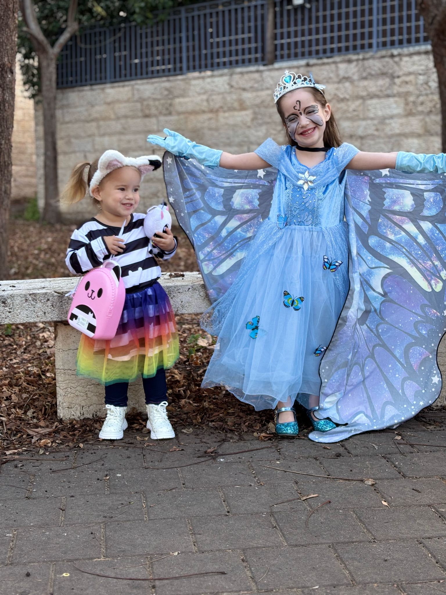

פורים שמח! 🎭
מרץ 2025 | תחפושות ושמחה

רותי ונגה — פורים שמח!

מהממות!

מתוקים בפורים
"עקביות זה חשוב 😂 — רותי לפני שנתיים"
ספיר
יואב, אתי והמשפחה
ינואר 2025 | שירות בחרמון
ינואר 2025 | יעקב וספיר בדובאי
הרגעים הגדולים והקטנים של השנה
מרץ 2025 | תחפושות ושמחה
מרץ 2025 | מזל טוב!
אוגוסט–ספטמבר 2025 | טיול אחים
2025 | שירות צבאי
ספטמבר 2025 | שנה חדשה מתחילה

דצמבר 2025 | אור וחום משפחתי
דצמבר 2025 | גדוד מילואים 8239
2025–2026 | רגעים שנשמור לתמיד